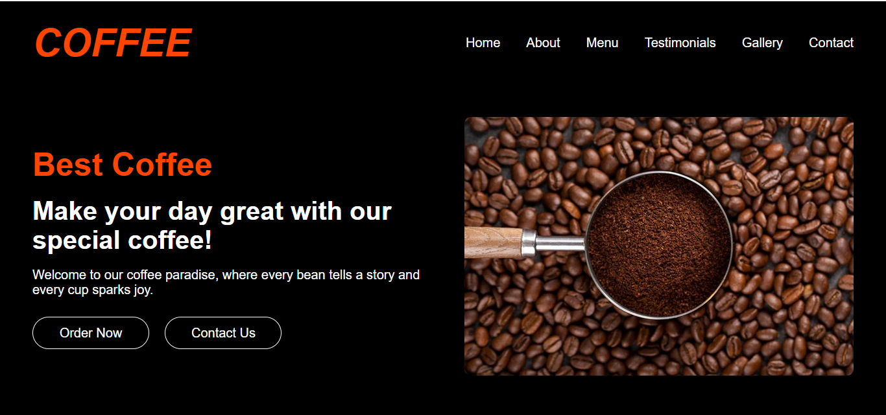
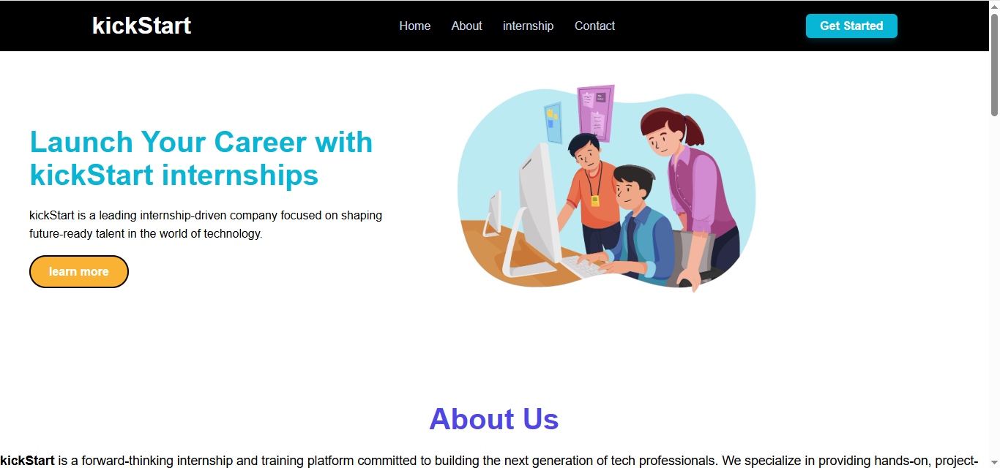
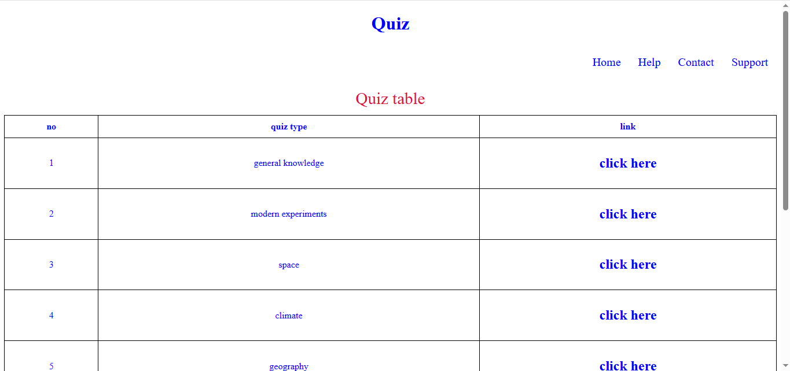

Latest Project
01
Interactive 3D Image Visualization
The goal is to convert static images or models into dynamic 3D visualizations, enabling interaction such as rotation, zooming, and inspection from various viewpoints. This can be especially useful in fields like education, gaming, architecture, virtual reality, and e-commerce.
HTML, CSS, JavaScript

02
Simple Calculator Web App
The goal of this project is to strengthen understanding of basic programming concepts, UI design, and logical operations by developing a fully working calculator. It serves as a foundation for building more complex applications and improving frontend development skills.
HTML, CSS, JavaScript

03
COFFEE - Coffee Landing Page
The goal of this project is to create an aesthetically pleasing and informative landing page that captures user attention, promotes brand identity, and encourages interaction—whether it’s learning more about the coffee, signing up for updates, or placing an order.
HTML, CSS

04
Responsive House Design Landing Page
The primary goal of this project is to demonstrate the use of HTML and CSS (with responsive design techniques) to build a visually attractive and mobile-friendly landing page that adjusts seamlessly across different devices and screen sizes.
HTML, CSS

05
Responsive Image Slider
The main goal of this project is to demonstrate how to build a dynamic and responsive image carousel without relying on external libraries or frameworks. It’s a great way to display portfolios, product images, or gallery content in a modern format.
HTML, CSS

06
Full-Screen Image Slider
The main goal of this project is to create a visually appealing and responsive full-screen slider that functions without any external libraries or frameworks. It’s designed to offer both automatic transitions and manual control, providing users with a seamless viewing experience.
HTML, CSS

07
KickStart – Internship Company Landing Page
The goal of this project is to create an engaging online presence for KickStart, helping users quickly understand what the company offers and encouraging them to explore internship programs or get in touch. It’s crafted to build trust and drive action — whether it's signing up, browsing internships, or contacting the team.
HTML, CSS,JavaScript

08
Login Page
The main goal of this project is to build a simple and effective user login interface that allows registered users to sign in using their credentials. It lays the foundation for integrating authentication systems in larger applications such as admin dashboards, e-commerce platforms, or educational portals.
HTML, CSS

09
Quiz Website
The main goal of this project is to build a responsive quiz platform that allows users to participate in quizzes online. It helps users assess their learning, practice for exams, or just have fun with general knowledge. The project also demonstrates the use of web technologies to manage question logic, scoring, and UI updates.
HTML, CSS,JavaScript

10
Solar System Web Visualization
The main goal of this project is to provide a fun and informative way to learn about the solar system using web technologies. It helps users—especially students—understand planetary order, scale, and basic astronomy concepts through dynamic visuals and content.
HTML, CSS